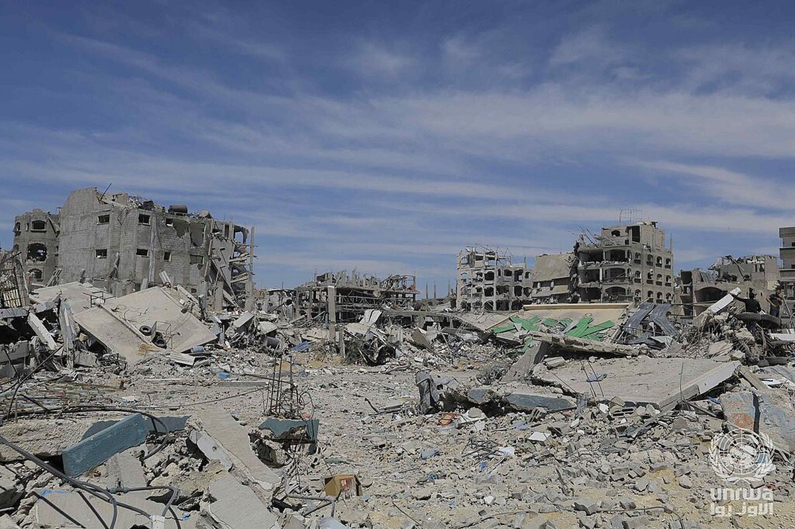
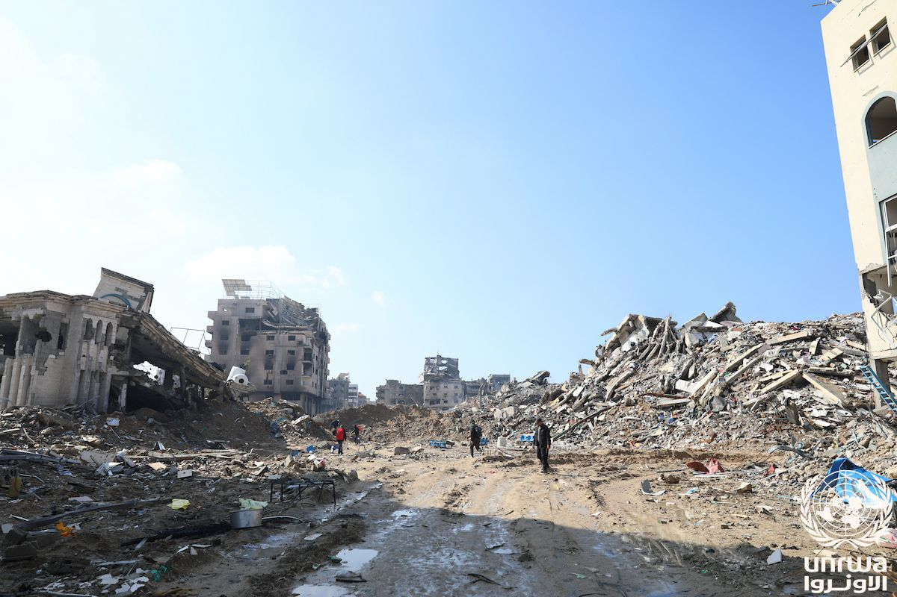
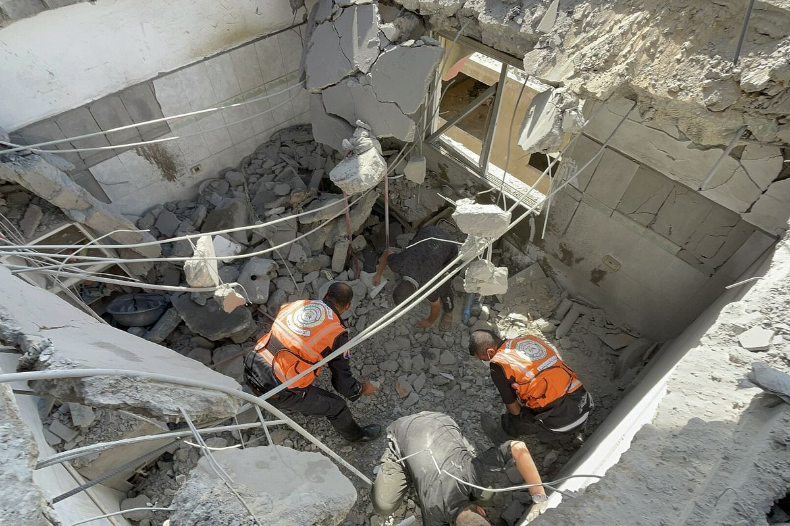
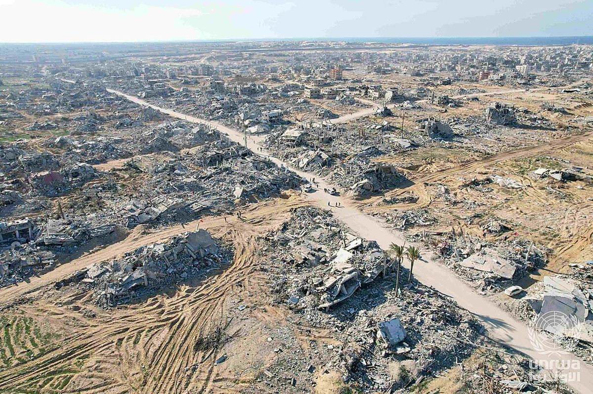
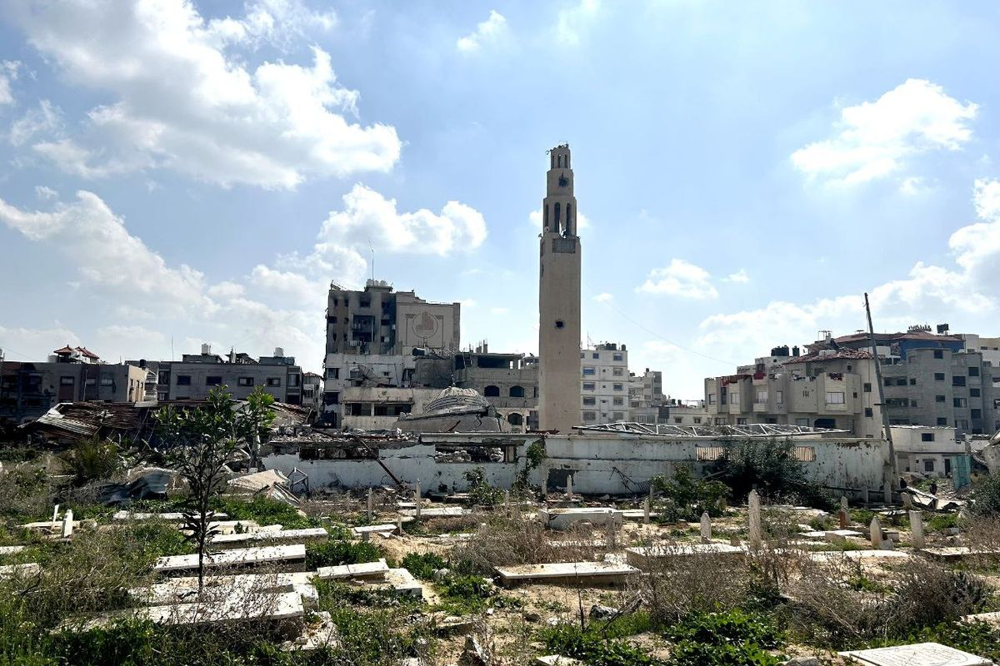
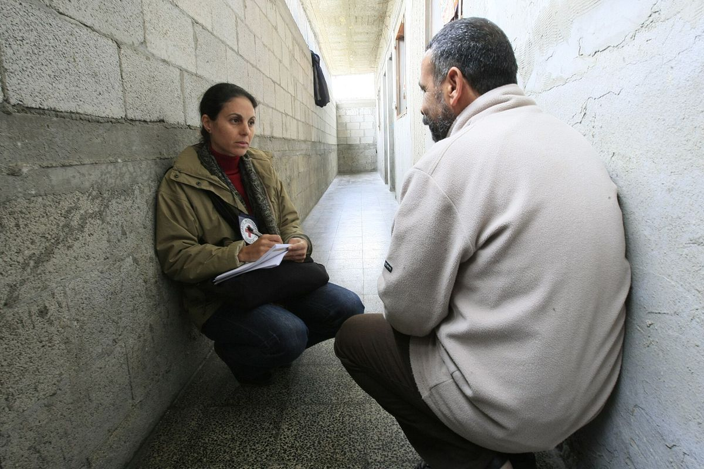
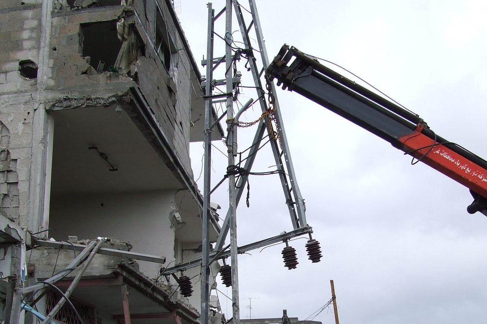

شخص مفقود في قطاع غزة منذ تشرين الأول/أكتوبر 2023
الجهاز المركزي للإحصاء الفلسطيني، 31 كانون الأول/ديسمبر 2025؛ الهيئة المستقلة لحقوق الإنسان، 20251,2
لكل مفقود اسم، ولكل عائلة الحق في المعرفة.
الفريق الوطني لمتابعة ملف المفقودين والمختفين قسراً
شخص مفقود في قطاع غزة منذ تشرين الأول/أكتوبر 2023
الجهاز المركزي للإحصاء الفلسطيني، 31 كانون الأول/ديسمبر 2025؛ الهيئة المستقلة لحقوق الإنسان، 20251,2
منهم يُعتقد أنهم ما زالوا تحت الأنقاض
الدفاع المدني الفلسطيني، نقلاً عن مفوضية الأمم المتحدة السامية لحقوق الإنسان، 15 أيلول/سبتمبر 20263
جثماناً ورفاتاً بشرية انتُشلت من تحت المباني المدمرة بين تشرين الثاني/نوفمبر 2025 وأيلول/سبتمبر 2026
الدفاع المدني الفلسطيني، نقلاً عن مفوضية الأمم المتحدة السامية لحقوق الإنسان، 15 أيلول/سبتمبر 20263
حالة فقدان موثقة بشكل فردي، منها 4,700 من النساء والأطفال
مؤسسة الضمير لحقوق الإنسان، 3 حزيران/يونيو 20264
منذ تشرين الأول/أكتوبر 2023، فُقد أكثر من 10,000 شخص في قطاع غزة.1,2 ويُعتقد أن معظمهم يرقدون تحت أنقاض المنازل المدمرة، فيما انفصل آخرون عن عائلاتهم خلال النزوح، أو يُفترض أنهم محتجزون، أو دُفنوا دون التعرف على هوياتهم. ويشكل النساء والأطفال قرابة نصف الحالات الموثقة.4
تسير عمليات الانتشال ببطء، إذ انتُشل معظم الرفات يدوياً، لعدم توفر الآليات الثقيلة ومعدات الطب الشرعي اللازمة بالكميات الكافية.3
مكتب الأمم المتحدة لتنسيق الشؤون الإنسانية (أوتشا)، 2 تشرين الأول/أكتوبر 20265
تأتي هذه الأرقام من مصادر مختلفة جُمعت وفق منهجيات مختلفة، وهي ليست حصيلة موحدة. ويُعدّ اعتماد رقم وطني مرجعي، من خلال السجل الوطني المرجعي، من أولى مهام الفريق الوطني.
أشخاص يُعتقد أنهم مدفونون في المباني المدمرة
أشخاص فُقدوا خلال الإخلاء والتنقل المتكرر
أشخاص تعتقد عائلاتهم أنهم اقتيدوا ولا تتوفر لديها أي معلومات عنهم
رفات دُفنت في قبور مؤقتة أو غير معلَّمة دون التعرف على أصحابها
أشخاص يُخفى مصيرهم وأماكن وجودهم
تعيش العائلات حالة من الفقدان الغامض. وفي غياب تأكيد الوفاة، تواجه كذلك غموضاً قانونياً في ما يتعلق بالولاية والميراث والحالة الاجتماعية والممتلكات، إلى جانب الضائقة الاقتصادية.
إن الكشف عن مصير المفقودين في غزة مهمة إنسانية هائلة. وثمة ثمانية عوامل، كثيراً ما تجتمع معاً، تُبقي الحالات مفتوحة وتترك العائلات بلا إجابات.
من مساحة قطاع غزة هي كل ما تبقى لسكانه البالغ عددهم نحو 2.1 مليون نسمة
مكتب الأمم المتحدة لتنسيق الشؤون الإنسانية (أوتشا)، 2 تشرين الأول/أكتوبر 20265
طن من الركام في أنحاء قطاع غزة
برنامج الأمم المتحدة للبيئة، 23 أيلول/سبتمبر 20256

يُعتقد أن معظم المفقودين يرقدون تحت المنازل ومراكز الإيواء والمباني العامة المدمرة. ويؤدي حجم الدمار إلى تأخير الانتشال والتعرف على هوية الضحايا.
مثالفي موقع واحد بحي الزيتون في مدينة غزة، انتشلت طواقم الدفاع المدني 96 جثماناً ورفاتاً في أيلول/سبتمبر 2026، بينهم 58 طفلاً و23 امرأة.3

تشمل القيود على الوصول نحو 65 في المئة من مساحة قطاع غزة.5 ولا تستطيع فرق البحث والانتشال الوصول إلى أماكن كثيرة يُعتقد أن أشخاصاً مدفونون فيها، فتبقى الرفات دون انتشال لفترات طويلة.
مثالفي حي الشجاعية بمدينة غزة، فقدت امرأة زوجها وابنها البالغ من العمر 16 عاماً في تشرين الأول/أكتوبر 2023. ويقوم الآن موقع عسكري في المكان الذي يُعتقد أنهما يرقدان فيه.7

رُفض إدخال الآليات الثقيلة اللازمة لإزالة الأنقاض، وانتُشل معظم الرفات يدوياً.3 وتحولت عائلات كثيرة إلى فرق بحث بنفسها، تعمل بين الأنقاض غير المستقرة معرّضةً سلامتها للخطر.
مثالبعد أكثر من عامين على تدمير منزله، كان أب في مدينة غزة لا يزال يغربل أنقاضه بمنخل بحثاً عن رفات زوجته وأطفاله.8

عندما تُسوّى الأنقاض أو تُزال قبل الفحص الشرعي، قد تضيع إلى الأبد الرفات البشرية والمقتنيات الشخصية والمعلومات اللازمة للتعرف على هوية الموتى.
مثالفي رفح، وجدت عائلة لا يزال 14 من أفرادها مفقودين أن موقع منزلها قد سُوّي بالأرض وأُقيم عليه بناء بحلول آب/أغسطس 2026.7

دُفن كثير من الموتى على عجل، في قبور مؤقتة أو جماعية، دون سجلات. كما تعرضت المقابر للعبث، فلم تعد العائلات قادرة على العثور على القبور، وباتت الرفات أصعب في التعرف عليها.
مثالعجزت عائلات عن تحديد أماكن قبور ذويها في مقبرة البطش بمدينة غزة، بعد أن جُرفت بالجرافات في كانون الثاني/يناير 2026.9
لا توجد حالياً في غزة مرافق لفحص الحمض النووي،10 وقد قُيِّد إدخال أطقم فحص الحمض النووي.11 ولا يمكن حتى الآن مطابقة آلاف الرفات مع أسماء أصحابها.
مثالتتجمع العائلات في قاعات المستشفيات لمشاهدة صور الجثامين المُعادة مجهولة الهوية، على أمل التعرف على قريب من ملابسه أو مقتنياته الشخصية.12

لا تعرف عائلات كثيرة ما إذا كان قريبها المفقود قد احتُجز أو نزح أو قُتل. ولا تزال زيارات اللجنة الدولية للصليب الأحمر إلى أماكن الاحتجاز معلّقة،13 ما يترك الأهالي دون أي معلومات عن مصير أحبائهم وأماكن وجودهم.
مثالغادر رجل من خان يونس منزله لأداء صلاة العصر في تشرين الأول/أكتوبر 2023 ولم يعد. ولم تُسفر سنوات من استفسارات عائلته عن أي إجابة.14

أدى انهيار أنظمة الاتصالات والسجلات إلى صعوبة تسجيل الحالات وتبادل المعلومات وتنسيق عمليات البحث بالنسبة للعائلات والسلطات والمنظمات الإنسانية.
مثالتبحث شابة في مدينة غزة يومياً عن شقيقها البالغ من العمر 17 عاماً، وتعلّق صورته في أنحاء المدينة.15
تؤدي هذه العوامل مجتمعةً إلى تأخير حق العائلات في المعرفة. ولهذا السبب أيضاً يأتي السجل الوطني المرجعي أولاً: فالمعلومات التي تُجمع من العائلات الآن هي ما سيجعل تحديد الهوية ممكناً لاحقاً.
الفريق الوطني هو الجهة الوطنية المختصة والمرجعية الوطنية الوحيدة لملف المفقودين. وولايته إنسانية: الكشف عن مصير المفقودين وأماكن وجودهم، ودعم عائلاتهم.
تجتمع شهرياً وتتخذ قرارات الفريق
ست لجان فرعية متخصصة تتولى العمل الفني
أمانة دائمة تستضيفها وزارة العدل
سجل وطني واحد لكل حالة مُبلَّغ عنها
انتشال الرفات وفحصها وتحديد هويتها
الوضع القانوني للمفقودين وحقوق عائلاتهم
مرافقة العائلات طوال مسار البحث
بقيادة مشتركة بين وزارة العدل ووزارة الخارجية
معلومات عامة دقيقة وتواصل مع العائلات
تشارك العائلات في البحث وتُطلَع على المستجدات باستمرار
البحث عن الإجابات يأتي أولاً
تُسجَّل كل حالة مرة واحدة وفق معيار موحد
تنسيق الجهود الوطنية والدولية من خلال الفريق
تُبلغ العائلة عن فقدان أحد أفرادها
تُقيَّد الحالة في السجل الوطني المرجعي
تقدم العائلات الأوصاف والسجلات، وعينات مرجعية للحمض النووي عند الحاجة
تحديد الأماكن المحتملة وحمايتها
انتشال الرفات بعناية وتوثيقها
فحص يجريه مختصون في الطب الشرعي
مطابقة النتائج مع السجل ومعلومات العائلة
إبلاغ العائلة وتسليم الرفات لدفنها بكرامة
نزوح جماعي في غزة؛ وارتفاع حاد في البلاغات عن المفقودين
طواقم الدفاع المدني تبدأ عمليات انتشال واسعة النطاق من تحت المباني المدمرة
مجلس الوزراء يُنشئ الفريق الوطني
مذكرة مفاهيمية تحدد الإطار التشغيلي للفريق ولجانه الفرعية الست؛ وتوقيع مذكرة تفاهم مع لجنة المفقودين في قبرص
الاجتماع العام الثالث بمشاركة الشركاء الدوليين؛ واجتماع لجنة فنية مع برنامج الأمم المتحدة الإنمائي ومفوضية الأمم المتحدة السامية لحقوق الإنسان حول الطب الشرعي وقاعدة البيانات الوطنية
ساعدونا في توثيق المفقودين. يُسجَّل كل بلاغ مرة واحدة في السجل الوطني المرجعي.
تسجيل شخص مفقوديعمل الفريق مع المنظمات الدولية ومع آليات البحث الوطنية في دول أخرى للاستفادة من الممارسات المجرَّبة. وقد وقّع مذكرة تفاهم مع لجنة المفقودين في قبرص. كما تستند منهجيته إلى تجارب آليات البحث الوطنية في البوسنة والهرسك وكولومبيا وكوسوفو، وتتبع إرشادات اللجنة الدولية للصليب الأحمر بشأن التعامل الكريم مع الموتى. ويُنظَّم دعم الشركاء حول اللجان الفرعية الست ويُوجَّه من خلال الفريق الوطني.
سجل واحد لجميع فئات المفقودين
مراكز تحديد الهوية والتبريد والمعدات في غزة
عينات مرجعية من العائلات، وإدخال أطقم فحص الحمض النووي
حماية المواقع قبل إزالة الأنقاض وإعادة الإعمار
الدعم النفسي الاجتماعي والمساعدة القانونية

البحث عن الإجابات واجب إنساني ومسؤولية وطنية.
الفريق الوطني لمتابعة ملف المفقودين والمختفين قسراً · وزارة العدل, دولة فلسطين